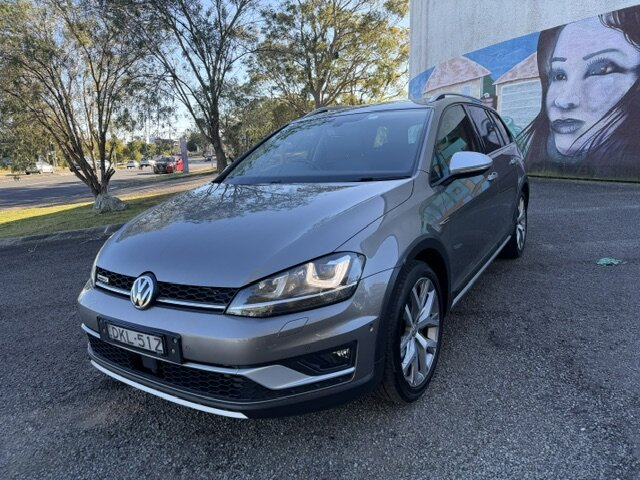
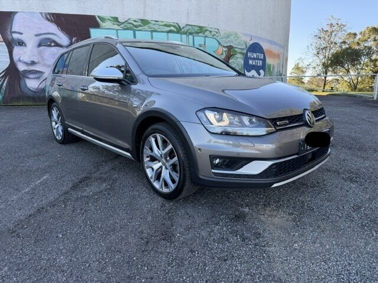
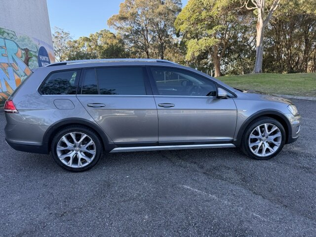
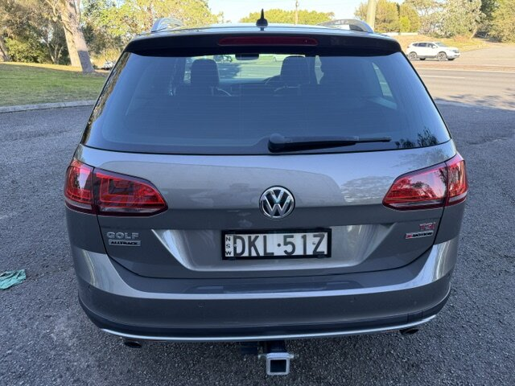
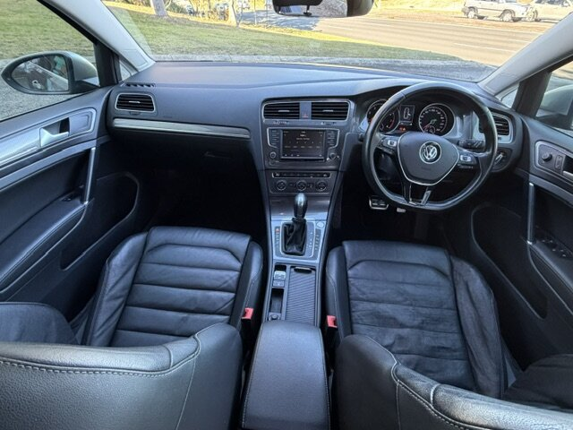
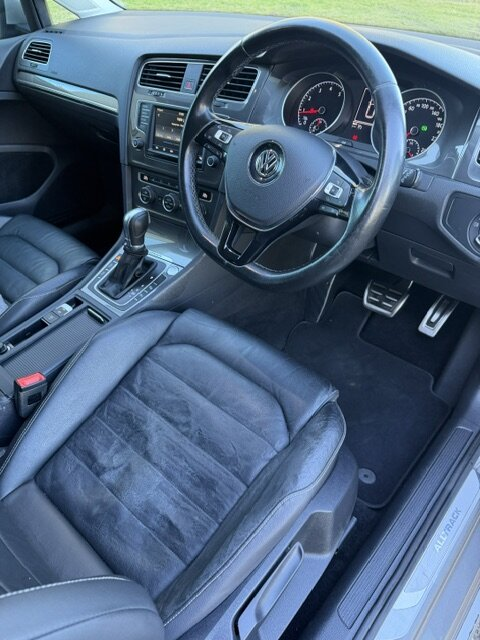
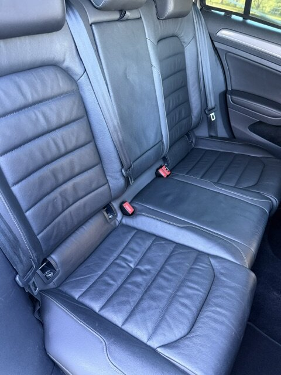
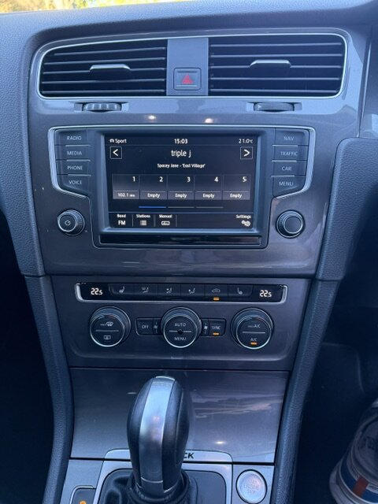
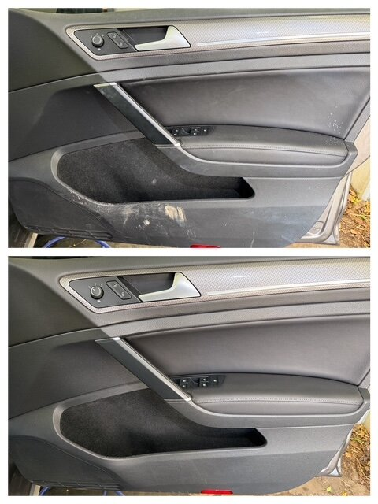
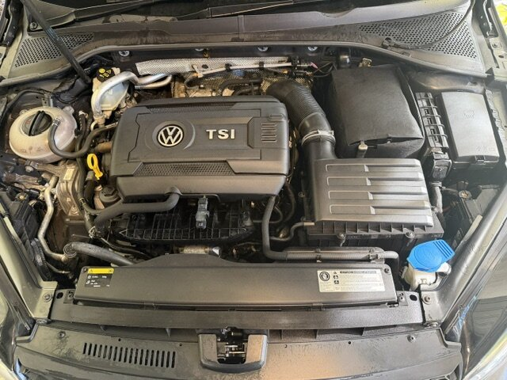

Details
- Year
- 2016
- Body
- Station wagon
- Colour
- Grey
- Odometer
- 140,000 km
- Engine
- 1.8 turbo petrol
- Transmission
- Automatic (DSG)
- Drive
- All-wheel drive
- Fuel
- Always used 98
Uses about 8.5 L/100 km - Seatcovers
- Comes with custom neoprene seatcovers for the front seats
- Tow bar
- Fitted at ISP Glendale shortly after purchase.
- Registration
- NSW, to 18 Dec 2026
Photos









